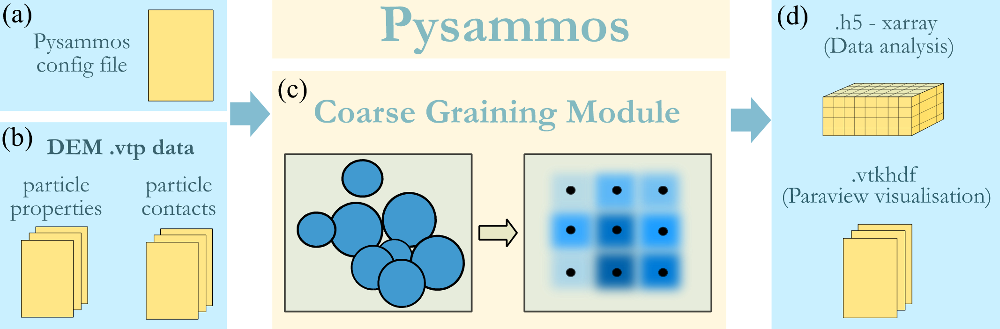
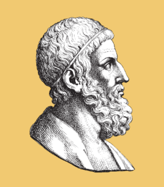

Home
Pysammos is a Python package designed with the outlook of providing a user-friendly CG workflow to post-process data form the MFiX open-source DEM software, and provide a streamlined visualisation in widely-used open-source visualisation software, Paraview. This code package provides flexibility in the output variable selection, mesh parametrisation, and data analysis of the obtained results. Pysammmos is also designed to invite geoscientists to incorporate DEM in their research, as many processes studied in geosciences involve discrete elements that are currently modelled as a continuum could benefit from a discrete insight. Similarly, to enhance DEM analysis by extracting continuum fields without the need to handle inner-level source code. The efficient algorithmic complexity exhibited by Pysammos avoids the requirement of extensive computational resources, making it a programme that can be ran on at the same time as other processes.
Features:
Processes MFIX-DEM simulation data
Processes particle data of any shape and size distribution
Customisable coarse-graining mesh
Outputs continuum fields in vtkhdf format for Paraview visualisation and in h5 format for data analysis
Benchmarked against other open-source and commercial CG codes
Open-source and free to use

Who was the Sand Reckoner?
The Sand (psammos, in greek) Reckoner is a work by Archimedes, in which he endeavoured to determine the number of grains of sand that could fit in the universe. To do so, he invented a new system of large number notation, as the number system at that time could only express numbers up to a myriad (10,000). Our open source code is able to process any granular model in the universe no matter the number of grains! In fact, the more, the myriar.
{kind=link}

Contents
Project Information
Funding
This project has received funding from the NERC Edinburgh Earth Ecology and Environment Doctoral Training Partnership grant NE/S007407/1.
Collaborators
This project has been developed with the contribution of the following collaborators:
Dr. Eric C. P. Breard (University of Edinburgh)
Dr. Mark Naylor (University of Edinburgh)
Dr. John P. Morrissey (University of Edinburgh)
Dr. Patrick J. Zrelak (University of Edinburgh)
Contacts
For any questions, suggestions or collaborations, please contact:
Lead developer: Claudia Elijas Parra (claudia.elijas.parra@gmail.com)
Supervisor: Dr. Eric C. P. Breard (eric.breard@ed.ac.uk)